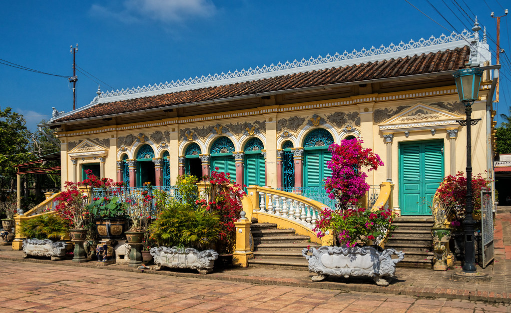

Một trong những công trình nổi tiếng nhất Cần Thơ, nơi vẻ đẹp cổ điển, không gian sân vườn và những chi tiết nội thất tinh tế cùng tạo nên cảm giác rất riêng của miền Tây xưa.
Nhà cổ Bình Thủy là một trong những điểm đến gợi cảm giác xưa cũ rõ nhất ở Cần Thơ. Công trình nổi bật với mặt tiền sang trọng, nội thất cầu kỳ và không gian bao quanh đủ để tạo nên một trải nghiệm vừa tham quan vừa cảm nhận.
Nơi đây không chỉ đẹp ở kiến trúc mà còn ở bầu không khí. Chỉ cần bước vào sân và nhìn từng chi tiết nhỏ, người xem đã dễ cảm nhận được chiều dài thời gian cùng nếp sống của một giai đoạn đã qua.

Mỗi đường nét đều cho thấy sự chăm chút và gu thẩm mỹ rất rõ của chủ nhân xưa.
Đây là nơi dễ khiến người xem chậm lại và cảm nhận vẻ đẹp của thời gian.
Ánh sáng, bố cục và chất liệu kiến trúc khiến khung hình luôn có chiều sâu.
Không chỉ là một căn nhà cũ, nơi đây giống như một lát cắt ký ức còn được giữ lại khá nguyên vẹn trong lòng thành phố hiện đại.
Nhìn ở bất kỳ góc nào, công trình cũng có một nét chỉn chu rất riêng.
Ngôi nhà cho thấy phong cách sống và gu thẩm mỹ của một thời kỳ đáng nhớ.
Không cần vội, chỉ cần đi chậm và ngắm kỹ là đã đủ thú vị.
Bạn có thể dành một khoảng thời gian vừa đủ để vừa ngắm kiến trúc, vừa chụp ảnh mà không bị quá gấp gáp.
Bắt đầu từ khu sân trước để thấy rõ vẻ đẹp cân đối và bề thế của công trình.
Quan sát nội thất, cầu thang, cửa và các chi tiết mang phong cách giao thoa Đông Tây.
Ánh sáng tự nhiên thường giúp công trình lên hình mềm và sang hơn.
Nơi này rất hợp để ghép vào một ngày khám phá Cần Thơ theo hướng văn hóa và kiến trúc.
Nếu bạn thấy website hữu ích, hãy ủng hộ một ly cà phê để nhóm có thêm động lực phát triển.
 Quét mã QR hoặc nhấn vào ảnh để ủng hộ.
Quét mã QR hoặc nhấn vào ảnh để ủng hộ.
Đánh giá từ du khách
Hãy chia sẻ cảm nhận của bạn về Nhà cổ Bình Thủy để những người ghé sau có thêm gợi ý nhé.